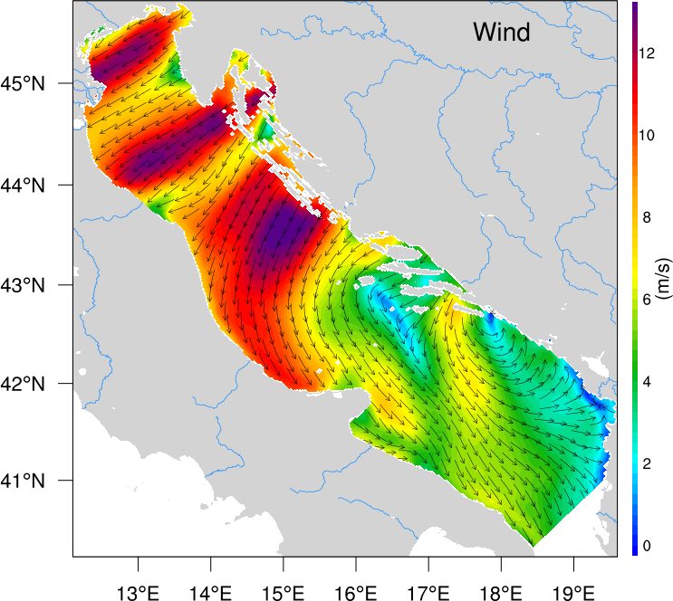
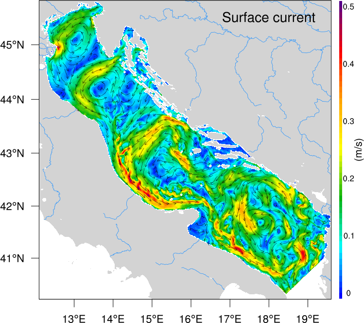
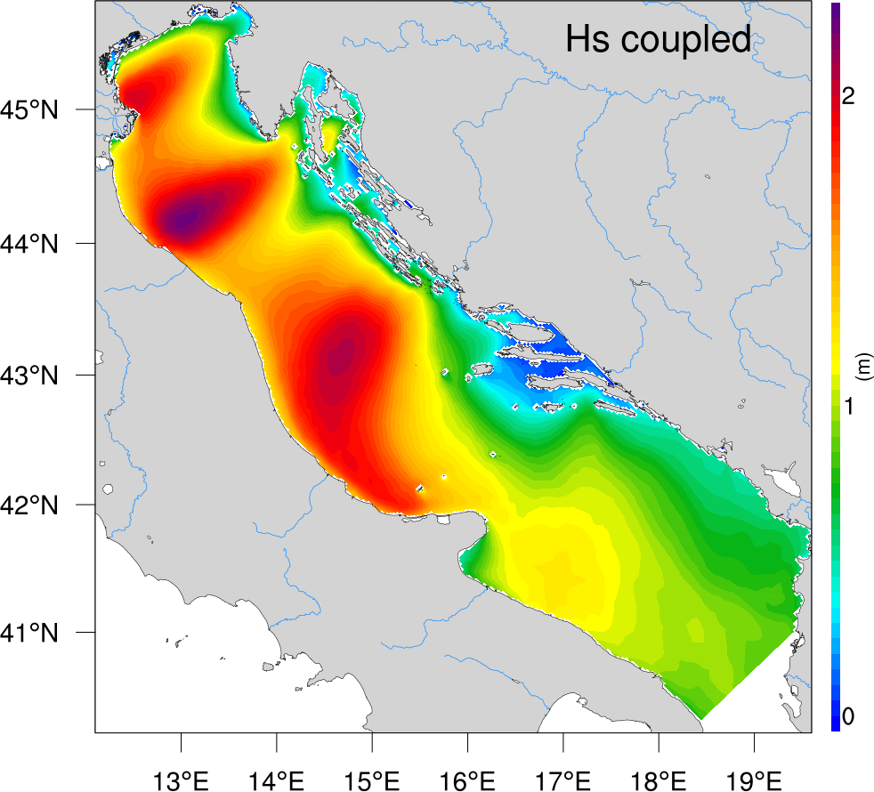
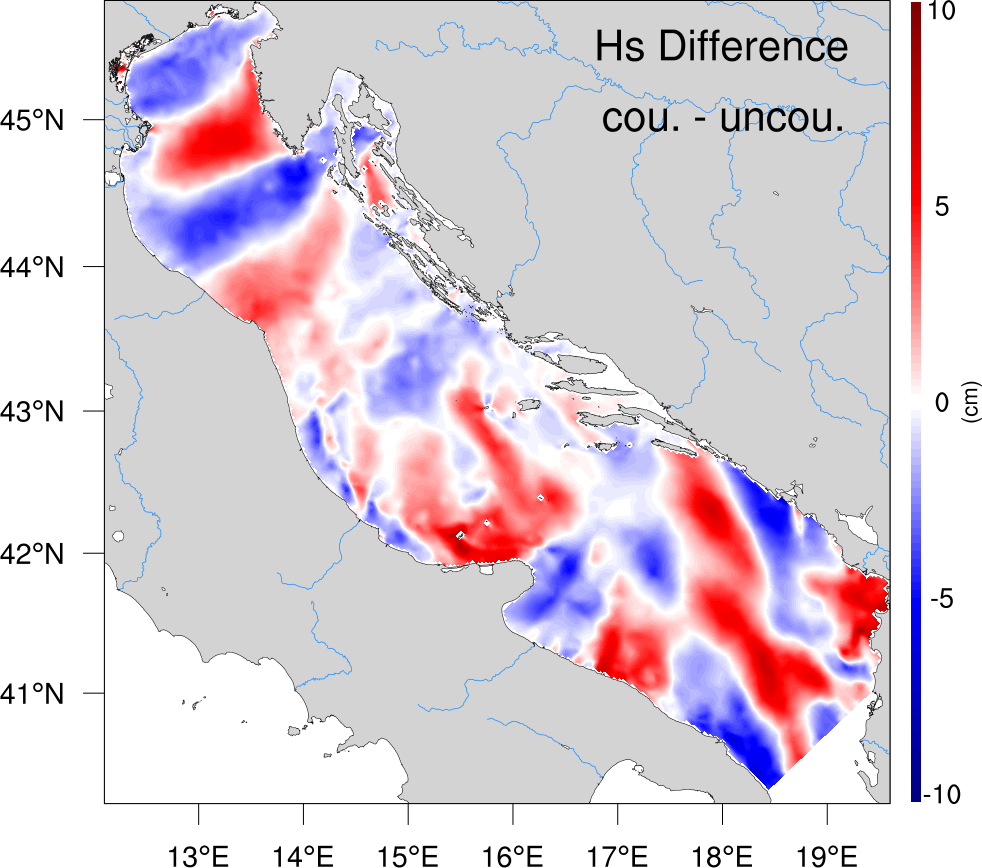

Coupling of circulation and wave models
I coupled the circulation model ROMS with the wave model WWM. Below the effect of coupling:




The coupling makes the significant wave height lower in the Bura jet but increases it in front of Istria.
L M. Dutour Sikirić, A. Roland, I. Tomažić, I. Janeković, Hindcasting the Adriatic Sea near-surface motions with a coupled wave-current model, Journal of Geophysical Research - Oceans, 117 (2012) C00J36.
L M. Dutour Sikirić, A. Roland, I. Janeković, I. Tomažić, M. Kuzmić, Coupling of the Regional Ocean Modelling System and Wind Wave Model, Ocean Modelling 72 (2013) 59--73.